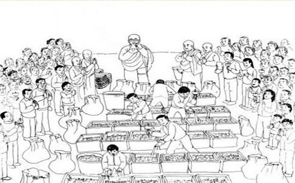

把所放之众生置于一处，大众一起念诵：
加持咒（三遍）：
嗡 桑巴ra 桑巴ra 波玛纳萨ra 嘛哈藏巴巴 吽帕得娑哈
诸佛
从今直至菩提永皈依。
我以所修施等诸资粮，
为利有情故愿大觉成。
愿诸众生永具安乐及安乐因；
愿诸众生永离众苦及众苦因；
愿诸众生永具无苦之乐、我心怡悦；
愿诸众生远离贪嗔之心、住平等舍。
并观想将此众生供养诸佛
诸佛菩萨垂念我，乃至究竟菩提果，
此等众生作供养，祈以悲愍而纳受。
观
照见
顶礼、供养、皈依出有坏善逝应供正等觉本师
顶礼、供养、皈依出有坏善逝应供正等觉善名称吉祥王如来
顶礼、供养、皈依出有坏善逝应供正等觉宝月智严光音自在王如来
顶礼、供养、皈依出有坏善逝应供正等觉金色宝光妙行成就如来
顶礼、供养、皈依出有坏善逝应供正等觉无忧最胜吉祥如来
顶礼、供养、皈依出有坏善逝应供正等觉法海雷音如来
顶礼、供养、皈依出有坏善逝应供正等觉法海胜慧游戏
顶礼、供养、皈依出有坏善逝应供正等觉药师琉璃光如来
顶礼、供养、皈依出有坏善逝应供正等觉西方
顶礼、供养、皈依出有坏善逝应供正等觉宝髻佛
顶礼、供养、皈依
顶礼、供养、皈依
顶礼、供养、皈依
顶礼、供养、皈依
顶礼、供养、皈依除盖障菩萨
顶礼、供养、皈依金刚手菩萨
顶礼、供养、皈依
顶礼、供养、皈依
顶礼、供养、皈依十方三世一切佛，一切菩萨摩诃萨
观世音菩萨心咒（二十一遍）：嗡嘛呢叭美吽舍
阿弥陀佛心咒（十遍）：嗡阿弥德瓦阿依斯德吽舍
不动佛心咒（三遍）：
那莫ra 那札雅雅 嗡刚嘎讷刚嘎讷 若匝讷若匝讷 卓札讷卓札讷 札萨讷札萨讷 札德哈那札德哈那 萨瓦嘎玛巴让m巴 ra讷美 萨瓦萨埵难匝索哈
长寿佛心咒（三遍）：
嗡 那摩巴嘎瓦得 阿坝热么大 阿耶加那 色波那则大得昨ra 杂呀 达它嘎达亚 阿哈得 萨亚桑波达亚 达亚 它嗡 本耶本耶 吗哈本耶 阿坝热 么达本耶 阿坝热 么大本耶 加那桑吧 若巴子得 嗡 萨瓦桑嘎ra 巴热西达 达玛得 嘎嘎那萨梦嘎得 桑巴瓦 波西得 吗哈那亚 巴热瓦锐索哈
南无阿弥多婆夜 哆他伽多夜 哆地夜他阿弥利都婆毗 阿弥利哆悉耽婆毗 阿弥利哆毗迦兰帝 阿弥利哆毗迦兰多 伽弥腻 伽伽那 枳多迦利娑婆诃
缘起咒（三遍）：
嗡耶达日玛黑德抓巴瓦 黑敦得堪达塔嘎多哈雅巴达 得堪匝友呢若达 诶旺巴德玛哈夏日玛纳耶索哈
偈颂（一遍）：
诸法从缘起，如来说是因，
彼法因缘尽，是大
诸恶莫作，众善奉行，
自净其意，是诸
① 时间：
② 地点：宜在放生池、以及远离捕杀之水域、山林等尽量能使所放众生生存悦意且能长寿之地。
③ 类别：虫类、鱼类、飞禽、畜类等，所放众生之躯体越大，则所获之功德也越大。
④ 方式：动作轻柔，若有
⑤ 发心：应发利益众生之清净心，一心一意为其获得暂时之安乐及究竟之解脱而祈祷。
本来各种放生仪轨颇多，且各不相同。如汉地有的为念香赞、水文、
生老病死犹涌涛，愿度有海诸有情。
放生仪轨功德（一）无刀兵劫。世上刀兵大劫，皆由人心好杀所致。人人戒杀放生，则人人全其慈悲爱物之心，而刀兵劫运，亦自消灭于无形，此转移世运之绝大运动也，深望大政治家，大教育家，大农工家，注意于此，力为提倡，必有绝大效果。
（二）集诸吉祥。吾人一发慈悲之心，则喜气集于其身，此感应必然之理。
（三）长寿
（四）多子宜男。放生者善体天地好生之心，故获宜男之庆。
（五）诸佛
（六）物类
（七）无诸灾难。慈悲之人，福德日增，一切患难，皆无形消灭。
（八）得生天上。戒杀放生者，来世得生于四王天，享无边之福。若兼修
（九）诸恶消灭。现在为人生极危险时代。盖烟酒之癖，恋爱之魔，缠绕众人。如众生报恩，则诸恶消灭，四季安宁。
（十）子孙兴旺。动物由下级进于高阶之状态，与人类由野蛮进于文明之阶级相符合。据生物学家之言曰：凡生物皆应于外界之状态而生变化。如人人戒杀放生，则生生不息，善心相感，正似子孙代代相传，永远福寿。